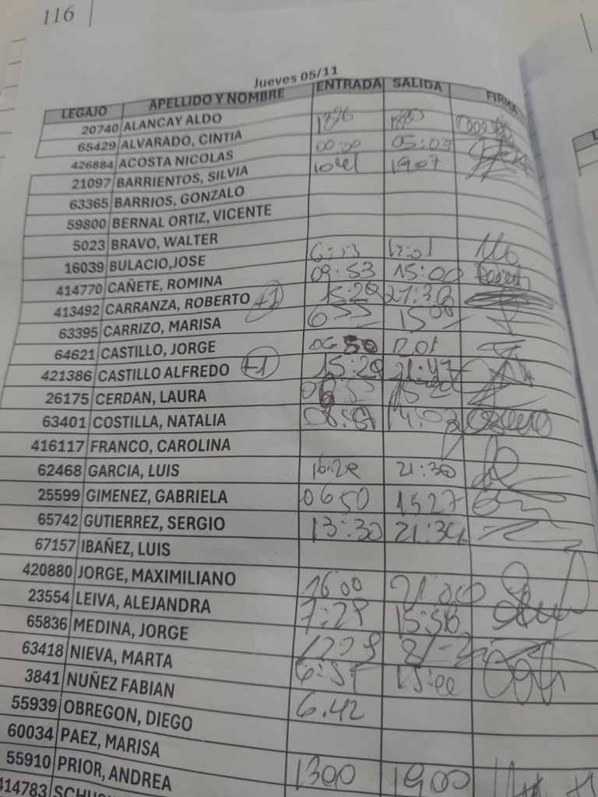
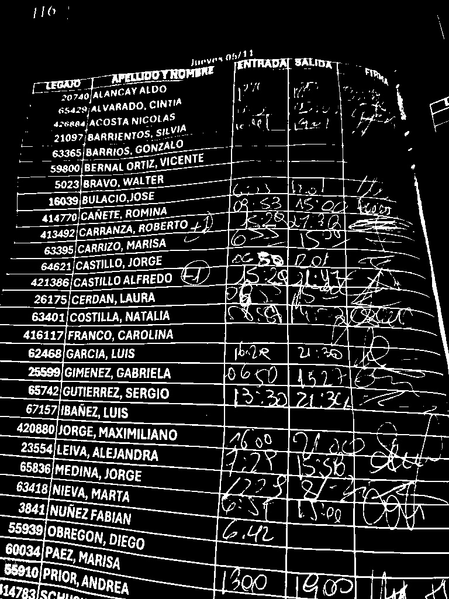
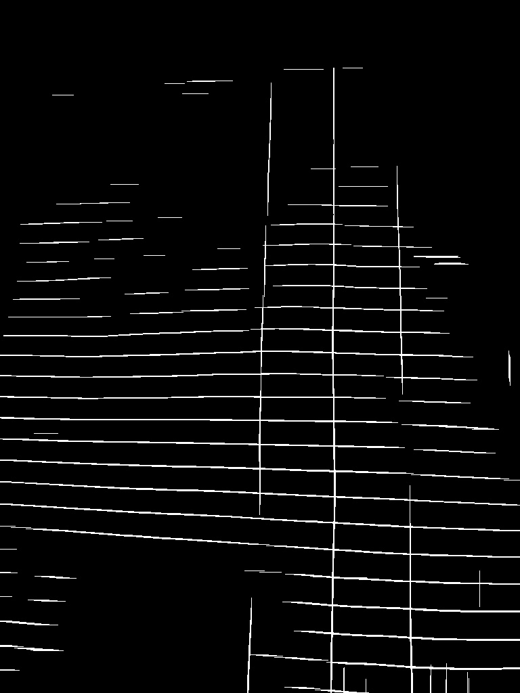

RH
RRHH · ASISTENCIA
Control de empleados
Registrá asistencia y consultá el banco de horas de cada persona.
o
La demo usa nombres ficticios y guarda los cambios solo en este navegador.
RRHH · ASISTENCIA
Control de empleados
REGISTRO DIARIO
Asistencia
Seleccioná a la persona, la fecha y el estado.
SALDOS Y MOVIMIENTOS
Banco de horas
Las acumulaciones suman al saldo y las devoluciones descuentan horas disponibles.
Saldo por empleado
Seleccioná un nombre para filtrar sus movimientos.
| Empleado | Saldo disponible | Acción |
|---|
Todavía no hay empleados. Agregá uno para iniciar su banco de horas.
Movimientos recientes
El historial muestra el saldo que quedó después de cada operación.
| Fecha | Empleado | Movimiento | Horas | Saldo resultante | Detalle |
|---|
Aún no hay movimientos registrados.
VISIÓN ARTIFICIAL · PDI (PROCESAMIENTO DIGITAL DE IMÁGENES)
Digitalizar Planilla de Asistencia Física
Digitalizá la foto del libro de firmas diario mediante OpenCV: corrige perspectiva, elimina sombras con Otsu, detecta la cuadrícula morfológicamente y clasifica presentes/ausentes para impactar en el Banco de Horas.
1. Cargar foto del libro de firmas
Podés cargar la foto real del libro manuscrito (Jueves 05/11) o subir una foto nueva desde tu computadora o celular.
2. Estado del Procesamiento
Hacé clic en "Cargar Foto Real" y luego en "Procesar con Visión Artificial" para ver el pipeline completo y el cálculo automático de horas.
Filas analizadas: 9 empleados
Presentes: 7 | Faltas sin aviso: 2
Pipeline de Visión Artificial (Demostración de Cátedra · M1, M2 y M3)
Transformaciones de imagen para pasar de la foto torcida y con sombras a datos estructurados.
1. Foto Original

Foto inclinada de celular con sombras de iluminación.
2. Perspectiva Corregida

Homografía de 4 puntos y warpPerspective.
3. Binarización Otsu

Umbral bimodal para remoción total de sombras y fondo.
4. Grilla Segmentada

Morfología matemática (kernels rectangulares H y V).
Resultados Extraídos y Cómputo del Banco de Horas (Jueves 05/11)
Clasificación automática: cálculo de horas efectivas vs jornada contractual (8h / 5h) y tolerancia a olvido de salida.
| Legajo | Empleado | Jornada | Entrada | Salida | Estado | Horas Trab. | Dif. Banco Horas | Observación de Negocio |
|---|